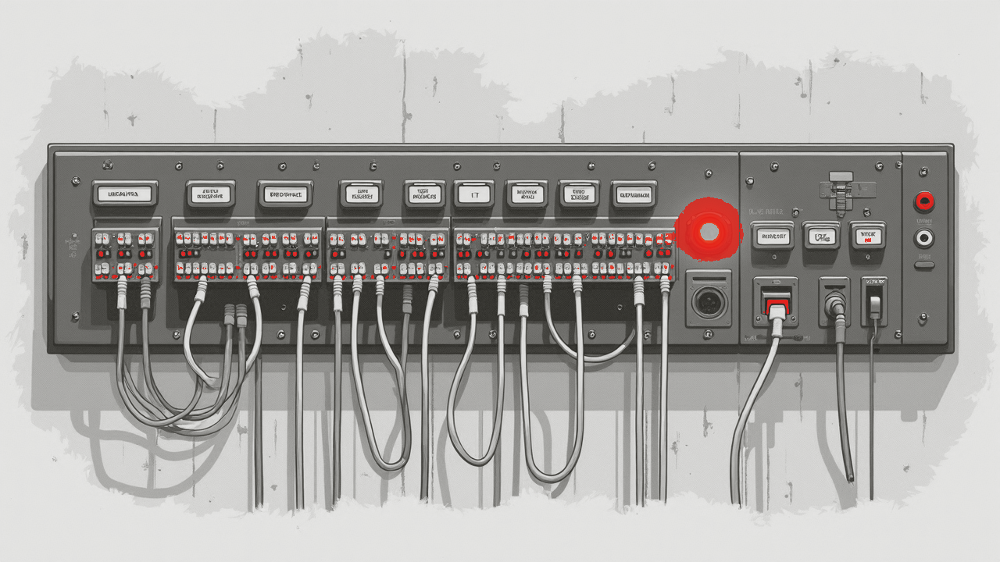

Connect your bots and services to RogerAI
If it speaks the OpenAI API, it already speaks RogerAI. Repatch two lines - a base URL and a key - and your bot is running on community GPUs.

Quick answer. RogerAI is OpenAI-compatible, so any OpenAI-SDK bot connects by changing two lines - a base URL and a key. On the bot's own machine,roger use <model>prints a localhost endpoint that can reach any band on the market. For a remote or headless bot, mint a grant key withroger grant createand point athttps://broker.rogerai.fyi/v1- which serves your own GPUs. Streaming, tool calls, and vision all work.
You don't rewrite your bot to move it to RogerAI. The chat endpoint is the OpenAI shape your code already targets, so the migration is a base URL and an API key - the same edit you'd make to switch between any two OpenAI-compatible providers.
How do I point a bot at RogerAI?
Change the client's base_url and api_key, keep everything else.
With the OpenAI Python SDK:
from openai import OpenAI
client = OpenAI(
base_url="https://broker.rogerai.fyi/v1",
api_key="rog-grant_...", # from: roger grant create
)
resp = client.chat.completions.create(
model="gpt-oss-120b", # a model your key can reach
messages=[{"role": "user", "content": "roger, radio check"}],
stream=True, # SSE streaming works
)
That's the whole integration. The same two fields work from the JS SDK, LangChain,
LlamaIndex, a Discord bot, or a plain curl with an
Authorization: Bearer header. This hosted example uses a grant key, which
serves your own GPUs; to reach the wider market from a bot, use the local endpoint
from roger use - see §3.
How do I get an API key?
Mint a grant key - a scoped key made for bots and services:
roger grant create --name my-botsprints arog-grant_...key. You (the owner) sign in once to mint it; the bot then uses it with no login.- It's shown once - save it. The broker only ever stores a hash, and recovery rotates it (the old one dies).
- Scope it:
--models,--nodes,--rpm,--daily-cap,--monthly-cap,--expires. A fresh free key is already capped, so a leak is bounded.
Hosted endpoint or local proxy - and which reaches whose band?
Both paths run through the broker - it screens, routes, meters, and signs receipts; nothing is peer-to-peer, and the localhost proxy is not a direct line to the node. So there's no separate network route and no meaningful speed difference between them. What actually differs is how you authenticate, and that decides whose bands you can reach:
- Local proxy - reaches any band. Run
roger use <model>on the bot's machine; it prints ahttp://127.0.0.1:<port>/v1endpoint and a session key, and signs every request with your identity. Because it's your signed identity, it can use any band on the market - $0 to your own nodes, your wallet for anyone else's. Best when you can run the CLI where the bot lives. - Grant key - reaches your own nodes. Mint a key and point a remote or headless bot straight at
https://broker.rogerai.fyi/v1with no CLI. A grant is confined to your own hardware (it can never reach another owner's nodes), so this is the pattern for "my cloud bot uses the GPU on my desk."
Want a remote, headless bot to use someone else's band? Install the CLI on that box
and run roger use there - signed identity reaches the whole market; a grant key
won't, by design. The flip side - putting a GPU on the air for these requests to land on -
is covered in share your GPU and earn.
Does streaming, tool calling, and vision work?
Yes. Streaming is standard SSE - pass stream=true. Tool / function
calling works on nodes that pass RogerAI's tool-call check (it's a verified
capability, surfaced in the market), and vision (image inputs) works on nodes that
accept images. The hosted broker also serves audio -
/v1/audio/speech (TTS) and /v1/audio/transcriptions (STT). Model
discovery is via /discover or roger search (there is no
/v1/models on the broker); pass an exact model id and the broker routes to the
cheapest node serving it. Browse ids on the model directory.
What should I know before shipping a bot?
- Rate limits. ~120 requests/min per identity by default; each grant also has its own limit plus daily and monthly token caps you set.
- Moderation applies to API traffic too - grants don't bypass it. Illegal content is blocked before dispatch.
- Keep the key secret. It's a bearer credential; treat it like any secret and rotate if exposed.
- Pick a live model. Which ids are available depends on who's on air - check
/discover(or the directory) rather than hard-coding a model that may not be up.
Frequently asked questions
- Is RogerAI OpenAI-compatible?
- Yes. It serves the OpenAI chat-completions API (plus audio), so any OpenAI-SDK bot or service works by changing only the base URL and API key.
- What base URL do I use?
- Either the hosted endpoint
https://broker.rogerai.fyi/v1with a grant key, or thehttp://127.0.0.1:<port>/v1endpoint thatroger useprints on your own machine. - Can a remote bot use someone else's model with just a grant key?
- No - a grant key is confined to your own nodes, so it can't reach another operator's hardware. To use the wider market from a remote or headless bot, run the
rogerCLI there (roger use): its signed identity can reach any band. Both paths still go through the broker. - How do I get an API key?
- Run
roger grant create --name my-bots. It mints arog-grant_key; the owner signs in once to create it, and the bot then uses it with no login. It's shown only once. - Does streaming and function calling work?
- Yes -
stream=truestreams over SSE, and tool/function calling works on nodes that pass the tool-call capability check. Vision (image inputs) works on nodes that accept images. - Which model id do I pass?
- An exact id from the live market, such as
gpt-oss-120b. Find current ids withroger searchor on the model directory; the broker routes your request to the cheapest node serving that model. - Are there rate limits?
- Yes. Roughly 120 requests per minute per identity by default, and each grant key has its own rate limit plus daily and monthly token caps that you configure.
curl -fsSL https://rogerai.fyi/install.sh | sh